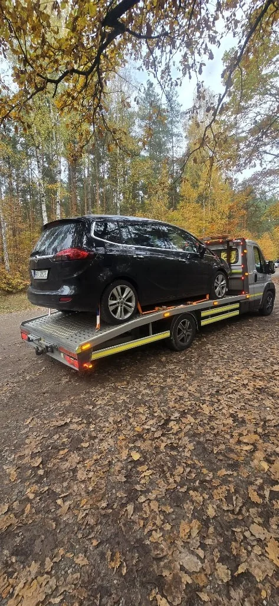

Osobówki
Auto nie jedzie, stoi na drodze, na parkingu albo pod domem. Zabieramy je pod wskazany adres.
Radom · pomoc drogowa 24/7
Całą dobę. Osobówki, busy i dostawcze. Stoisz — dzwoń, powiemy kiedy będziemy i ile to kosztuje.
Lesiów
Hol-Trans wyjeżdża z Lesiowa (26-631), gmina Jastrzębia. Do Radomia jest kilkanaście minut, stąd jeździmy po mieście i po drogach wokół.
W nocy i w święto jest ten sam numer. Ceny nie trzymamy na stronie — po telefonie, jak wiemy skąd i jakie auto, mówimy kwotę, zanim ruszymy.

Zakres
Jak coś jest nietypowe, i tak trzeba to powiedzieć przez telefon.
Auto nie jedzie, stoi na drodze, na parkingu albo pod domem. Zabieramy je pod wskazany adres.
Vany i dostawczaki. Mówisz, jaki to samochód — mówimy, czy laweta da radę.
Uszkodzone auto, które nie powinno jechać dalej. Do warsztatu, do domu albo na parking.
Padł akumulator. Odpalamy na miejscu, bez holowania, jeśli auto potem jedzie.
Pusty bak. Dowozimy paliwo. Jak to nie wystarczy, auto wjeżdża na lawetę.
Maszyny rolnicze, sprzęt budowlany i inne ładunki. Trzeba podać co, skąd i dokąd.
Całą dobę
Zadzwoń. Powiemy, kiedy będziemy i ile to kosztuje — zanim laweta ruszy.
Realizacje
Kliknij zdjęcie, żeby powiększyć.
Dojazd
Na co dzień Radom i powiat radomski. Kozienice, Zwoleń i Szydłowiec zależą od dystansu — mówimy to przy zgłoszeniu. Dalej też da się jechać, tylko nie obiecujemy tego z góry.
Baza jest w Lesiowie. Ulicy nie podajemy, bo lawetę zamawia się telefonem, nie w okienku.
Powiat radomski
Nie podajemy cennika z internetu. Hol przez miasto to inna kwota niż wyjazd po busa pod Pionki. Dzwonisz, mówisz miejsce i auto — dostajesz cenę, zanim ruszymy.
Tak. 572 304 045 działa tak samo o 3 w nocy i w niedzielę.
Zależy, gdzie stoisz i czy laweta jest już w trasie. Przy zgłoszeniu podajemy realny czas.
Osobowe, busy i dostawcze. Maszyny rolnicze i sprzęt budowlany — opisujesz, co mamy zabrać.
Tak. Do warsztatu, do domu albo na parking, który wskażesz.
Tak. Akumulator odpalamy na miejscu, paliwo dowozimy. Jak auto i tak nie pojedzie, wjeżdża na lawetę.
Z Lesiowa pod Radomiem, 26-631. Radom i powiat radomski to główny teren. Dalej ustalamy przy telefonie.
Kontakt
Lesiów koło Radomia. Powiedz, gdzie stoisz.
Całą dobę, 7 dni w tygodniu.